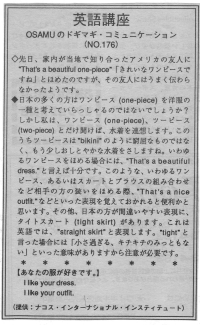

あなたの服が好きです。
I like your outfit. In Japanese, people say "one-piece" or "two piece." But it's used as an adjective in English. You can say: one-piece bathing suit. Also, don't say tight skirt- "straight skirt" is better to say. In English, there are certain words for different kinds of outfits, so we use that special word. For example: evening gown business suit (can be used for man or woman) outfit dress jumpsuit
先日、家内が当地で知り合ったアメリカ人の友人に、「きれいなワンピースですね」 ¨That´s a beautiful one-piece¨とほめたのですが、その友人にはうまく伝わらなかったようです。
日本の多くの方はワンピース(one-piece)を洋服の一種と考えていらっしゃるのではないでしょうか？ しかし私は、ワンピース(one- piece)、ツーピース(two-piece)とだけ聞けば、水着を連想します。このうちツーピースは ¨bikini¨ のような窮屈なものではなく、もう少しおしとやかな水着をさしますね。いわゆるワンピースをほめる場合には、¨That´s a beautiful dress.¨と言えば十分です。このような、いわゆるワンピース、あるいは，スカートとブラウスの組み合わせなど相手の方の装いをほめる際、¨That´s a nice outfit.¨などといった表現を覚えておかれると便利かと思います。その他、日本の方が間違いやすい表現に、タイトスカート(tight skirt)があります。これは英語では、 ¨straight skirt¨と表現します。 ¨tight¨ と言った場合には「小さ過ぎる、キチキチのみっともない」といった意味がありますから注意が必要です。
あなたの服が好きです。
I like your dress.
I like your outfit.

| © 1995-2013 NACOS International Institute. All Rights Reserved. |